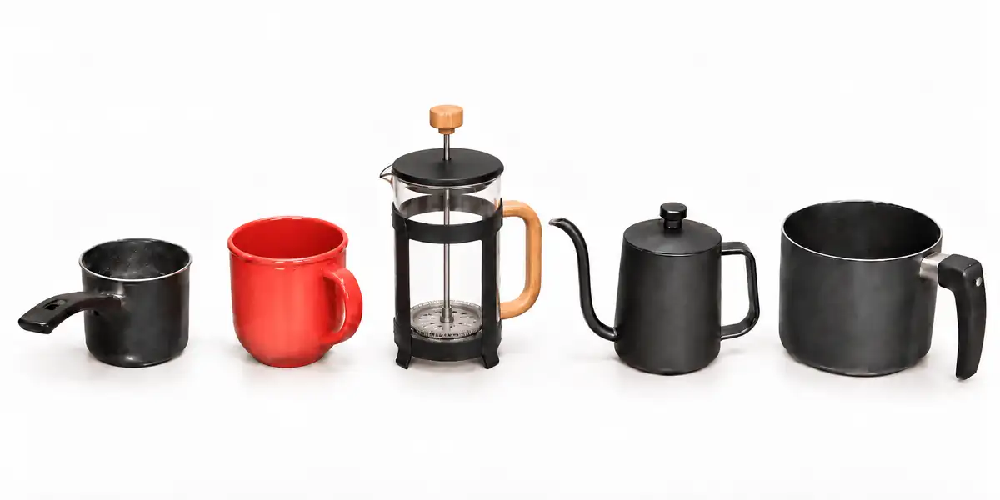

Agua del caño
Va en la cacerola pequeña. No se bebe. Solo la uso para calentar la prensa francesa y enjuagar sus piezas con agua muy caliente.
PRENSA FRANCESA · MI MÉTODO
Dos aguas, cinco utensilios y diez pasos. Esta web reproduce el procedimiento que sigo en casa.

Pequeña → jarro rojo → prensa → tetera → grande
MI MÉTODO
Trabajo con dos aguas diferentes. Una prepara la prensa; la otra prepara el café.
Va en la cacerola pequeña. No se bebe. Solo la uso para calentar la prensa francesa y enjuagar sus piezas con agua muy caliente.
Va en la cacerola grande. Es la única agua que uso para preparar el café y que luego paso a la tetera.
ANTES DE EMPEZAR
Siempre los organizo así para tener todo a mano. Toca una tarjeta para recordar su función.
Primera agua · del caño
Contiene el agua del caño. No se bebe: la uso para calentar la prensa francesa y enjuagar con agua muy caliente sus piezas.
Soporte temporal
Recibe temporalmente la tapa y el conjunto del émbolo/filtros cuando los retiro calientes, para no apoyarlos directamente sobre la mesa.
Recipiente principal
Aquí caliento la jarra, añado el café, vierto el agua, mezclo, infusiono y finalmente hago el prensado.
Vertido circular
Recibe el agua limpia previamente hervida y me permite verterla sobre el café mediante movimientos circulares.
Segunda agua · para beber
Contiene el agua limpia que compro para beber. Cuando queda vacía, también puedo utilizarla para recibir el café terminado.
DE UN VISTAZO O EN DETALLE

Enciendo simultáneamente dos cacerolas. La pequeña contiene agua del caño. Esta agua no es para beber; solamente la uso para calentar y enjuagar la prensa francesa y sus piezas. Pongo esa hornilla al máximo para que hierva rápidamente.
Al mismo tiempo enciendo la cacerola grande con el agua limpia que compro para beber y que posteriormente usaré para preparar el café. Esta segunda hornilla queda al mínimo porque todavía debo esperar que hierva la primera agua, trabajar con la prensa francesa y dejarla calentándose durante aproximadamente 2 minutos.

Cuando hierve el agua de la cacerola pequeña, la vierto dentro de la prensa francesa y coloco la tapa con el émbolo.
Aprovecho esa misma agua muy caliente para enjuagar el conjunto que llamo “filtros”: filtro, placas, pieza en forma de cruz y resorte. Durante aproximadamente 10 segundos subo y bajo el émbolo para que el agua caliente pase por estas piezas.
Al terminar, subo completamente el émbolo. Los filtros quedan arriba y el calor y el vapor también ayudan a calentar toda la jarra.

En mi celular pongo un cronómetro de 2 minutos y dejo el agua caliente dentro para que la jarra tome temperatura.
Cuando termina el tiempo, retiro la tapa junto con el émbolo y los filtros. Como están calientes y no quiero apoyarlos directamente sobre la mesa, coloco ese conjunto dentro del jarro rojo. Después retiro el agua utilizada para calentar la prensa.

Echo aproximadamente 2 a 3 cucharas grandes de café dentro de la prensa francesa.
Después sujeto la jarra y la agito suavemente para distribuir horizontalmente el café. No quiero que quede amontonado formando una especie de “cerro” en el centro; busco que quede aproximadamente nivelado.

Para este momento ya debería haber hervido el agua limpia de la cacerola grande. Retiro esa cacerola y la coloco al extremo derecho de mi zona de trabajo.
Vierto la cantidad necesaria de esa agua limpia dentro de la tetera. Luego tomo la tetera y echo el agua sobre el café mediante movimientos circulares hasta terminar toda el agua preparada en ella.

Cuando termino de echar el agua con la tetera, utilizo una cuchara. Mezclo el café con un movimiento parecido al que haría una persona al endulzar una bebida.
No agrego ningún ingrediente: no agrego azúcar ni leche. Solamente estoy mezclando café + agua con la cuchara.

Inmediatamente después vuelvo a colocar la tapa de la prensa francesa.
Bajo el émbolo solamente hasta que el filtro llegue aproximadamente a la superficie superior donde se encuentra el café. Todavía no presiono el café hacia el fondo.

Uso nuevamente mi celular. Configuro un cronómetro de entre 4 y 5 minutos. Normalmente pongo 4 minutos porque, en ocasiones, estoy lejos de la cocina y mientras regreso el tiempo real termina quedando aproximadamente dentro de ese rango.
Durante ese tiempo dejo infusionar el café. No sigo bajando el émbolo.

Cuando transcurren aproximadamente los 4 minutos, bajo lentamente el émbolo. Algunas personas lo bajan completamente hasta el fondo; yo no hago exactamente eso.
Prefiero detenerlo aproximadamente a una distancia equivalente al grosor de un dedo de la mano antes de tocar el fondo. Lo hago como precaución adicional para reducir todavía más la posibilidad de que algún grano o partícula llegue al café líquido filtrado, aunque probablemente no sucedería. Este consejo lo aprendí en Internet y lo incorporé a mi forma de preparar café.

Cuando termino de prensar, vacío inmediatamente el café. Mientras lo hago, sostengo el émbolo. Puedo vaciarlo en la cacerola grande, que para ese momento ya está vacía, o en cualquier recipiente adecuado que soporte café casi hirviendo.
No dejo el café preparado dentro de la prensa francesa porque en el fondo permanecen los granos. No quiero que continúen en contacto con el café líquido durante más tiempo del necesario. De esta manera busco conservar mejor su olor y su sabor.
Al final: disfrutar.

PREPARACIÓN COMPLETA
Una sola reproducción para ver mi secuencia completa. Los videos individuales siguen disponibles dentro de cada paso.
SECCIÓN INDEPENDIENTE
Estas ideas no forman parte de mi procedimiento; son otras maneras conocidas de trabajar con una prensa francesa.
Algunas preparaciones pesan el café y el agua para repetir una proporción concreta y luego ajustarla al gusto.
En otros métodos se espera después del hervor o se mide la temperatura antes de verter el agua.
Otra técnica humedece primero el café con una parte del agua, espera unos segundos y luego completa el vertido.
Algunos métodos esperan varios minutos y después rompen con una cuchara la capa que se forma en la superficie.
Hay preparaciones que amplían el tiempo y retiran espuma o partículas antes de servir.
También puede pasarse el café ya preparado por un filtro adicional para reducir todavía más los sedimentos.
Referencias externas para esta sección: Specialty Coffee Association y Blue Bottle Coffee. Son alternativas; no modifican mi método.